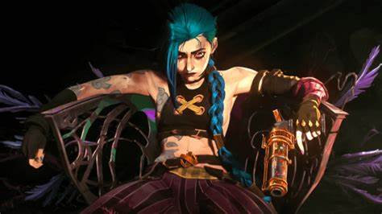

Arcane: 2ª Temporada - Uma Continuação Eletizante
por Eduardo Henryque
A aguardada segunda temporada de "Arcane", a série animada baseada no universo do jogo "League of Legends", chega com uma recepção espetacular, mantendo a excelência que conquistou os fãs na primeira temporada. Com uma pontuação impressionante de 100% de aprovação no Rotten Tomatoes, Arcane continua a ser uma joia no mundo das animações, combinando narrativa profunda, personagens complexos e um visual deslumbrante.
História e Desenvolvimento
Aviso de spoilers para quem ainda não viu a primeira temporada!
Na primeira temporada, fomos introduzidos a um mundo dividido pela desigualdade social entre as cidades de Piltover e Zaun. A história centraliza-se nas irmãs Vi e Powder (Jinx), cujas vidas são tragicamente transformadas por eventos que as levam para caminhos opostos. Enquanto Vi se torna uma figura de resistência, Jinx cai na loucura, criando uma rivalidade emocional e explosiva.
A segunda temporada retoma exatamente de onde a primeira parou, mergulhando ainda mais nas consequências das ações de seus personagens. Vemos Piltover e Zaun em uma situação ainda mais tensa, com conflitos políticos e sociais ameaçando explodir a qualquer momento. Vi continua sua busca incessante por redenção e justiça, enquanto Jinx se afunda mais em seu mundo caótico e destrutivo. Novos personagens entram em cena, trazendo novas dinâmicas e desafios para nossos heróis e vilões.
Personagens e Desenvolvimento
A profundidade dos personagens é um dos maiores trunfos de Arcane. Na segunda temporada, vemos um desenvolvimento ainda maior. Vi, lutando com seus próprios demônios, tenta reconectar com sua irmã perdida enquanto enfrenta novas ameaças que testam sua força e coragem. Jinx, por outro lado, torna-se mais imprevisível e perigosa, com sua mente cada vez mais fragmentada pelo trauma e pela dor.
Outros personagens, como Caitlyn, Jayce, Viktor e Ekko, também ganham mais destaque, cada um lutando com suas próprias batalhas internas e externas. O desenvolvimento de Viktor, em particular, é fascinante, mostrando a transformação de um idealista brilhante em um personagem cuja busca por perfeição o leva a caminhos sombrios.
Visual e Animação
A animação de Arcane continua a ser de tirar o fôlego, com um estilo artístico único que mistura pintura e 3D de uma maneira que raramente se vê na animação. Cada cena é meticulosamente detalhada, e as sequências de ação são incrivelmente fluidas e impactantes. O design dos personagens e dos cenários continua a ser uma obra de arte, capturando a essência do mundo de Runeterra de maneira vibrante e viva.
Pontuação e Recepção
A recepção da segunda temporada tem sido nada menos que fenomenal. Com uma pontuação perfeita de 100% no Rotten Tomatoes, críticos e fãs aclamam a série por seu desenvolvimento de personagens, complexidade narrativa e qualidade visual. A série não só mantém a qualidade estabelecida na primeira temporada, mas a eleva, entregando uma história rica e emocionalmente ressonante.
Arcane não é apenas uma série para fãs de "League of Legends"; é uma obra-prima que se destaca no gênero de animação, oferecendo uma narrativa poderosa e visualmente deslumbrante. A segunda temporada solidifica Arcane como uma das melhores séries animadas dos últimos tempos, prometendo ainda mais emoções e surpresas nas temporadas futuras.
Seja você um veterano do jogo ou um novato no mundo de Runeterra, Arcane oferece uma experiência imperdível que combina drama, ação e um design artístico sublime. Prepare-se para mais uma jornada inesquecível com Vi, Jinx e o restante do elenco em Arcane: 2ª Temporada.